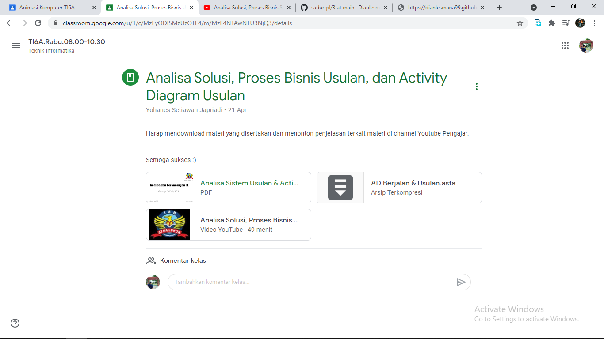

NIM : 1811500002
Nama : Dian Lesmana
Kelompok : TI6A
Hasil saya menyadur di pertemuan 3 :
- Perhitungan Nilai Kehadiran cukup membuat file index.html disetiap direktori pertemuan github (angka), Contoh 3 untuk pertemuan 3
- Perhitungan nilai tugas, dari kualitas konten file index.html tiap pertemuan yang saya sadur akan digunakan untuk perhitungan nilai tugas
- Dipertemuan ini kami mempelajari tentang Analisa sistem susulan :
- Analisa Solusi Sistem yang diusulkan
- Analisa proses bisnis sistem yang diusulkan
- Activity diagram untuk memodelkan sistem usulan.
- Mempelajari tentang Activity diagram, yang juga bisa diterapkan dikehidupan nyata yang mana contoh nya seperti proses pembelian disuatu toko.. dimana terdapat beberapa individu yang terlibat seperti kasir atau dll
- Memperdalam analisis tentang Activity Diagram
- Activity Diagram digunakan untuk menggambarkan suatu proses bisnis atau kegiatan
Download File Latihan Astah download
Pertemuan 3 Materi beserta Vidio Penjelasan dari Dosen

Mempelajari dan juga menganalisis Materi

Menyimak Penjelasan yang diberikan oleh dosen
.png)
Mempraktekkan sekaligus memahami AD seperti yang dijelaskan oleh dosen di APK Astah